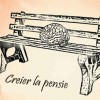

Peste 16.000 de români s-au alăturat Elenei Udrea şi au semnat petiţia iniţiată de firma lui Cornel Nistorescu, TBWA Bucureşti S.R.L., deţinătoarea platformei www.ALTFEM.ro. Cu fonduri europene, oamenii vor să impună tipărirea unei bancnote care să reprezinte o figură feminină. Susţinătorii proiectului cred că punerea unei femei pe banii româneşti va contribui la ameliorarea imaginii [...]

Ieri am descris asemănările uluitoare dintre trecutul recent şi prezent. Nimeni nu le priveşte cu atenţie pentru că ochii ne sunt împăienjeniţi de lacrimile nostalgiei. “Oamenii simpli” îşi amintesc cu drag de tinereţile hrănite cu Eugenii şi Brifcor, când luau ouă pe sub mână pentru că aveau o pilă la Alimentara, mergeau la mare cu [...]
Mai întâi a fost apriga mânie revoluţionară. În anii ’90, cu aerul libertăţii în nări, cetăţenii României nici nu voiau să rostească numele cizmarului dictator. Cu ură în suflet şi înjurături printre dinţi, poporul îşi hulea faptele sinistre ale celui poreclit ceaşcă, împuşcatu’ ori bâlbâitu’. Obligatoriu cu literă mică. El era vinovatul universal pentru tot [...]

Cu prilejul aniversării zilei de naştere, jurnaliştii trustului de presă Intact Media Group i-au pregătit preşedintelui Traian Băsescu un cadou special. E vorba despre un cântec în limba franceză pe care ziariştii de la Antena3 şi Jurnalul Naţional i l-au dedicat şefului statutului cu ocazia împlinirii a 61 de ani de viaţă tumultoasă, în data [...]
Mulţi oameni au impresia că există o vârstă de la care creierul are tot dreptul să iasă la pensie. Asta dacă a apucat vreodată să intre pe piaţa muncii. În unele cazuri, intelectul pur şi simplu se blochează la provocarea titanică a bastonaşelor din clasa întâi, se declară inapt şi depune cerere pentru ajutor de [...]

Pentru a demonstra cum se cumpără un loc de parlamentar, redactorii Gândul au inventat un personaj a cărui poveste n-ar putea să păcălească nici măcar un macac lobotomizat. I-au zis Călin Pompiliu Popescu şi i-au construit un site violet pe un domeniu gratuit (wordpress.com). Eroul imaginaţiei ziariştilor a fost contactat de însuşi Dan Diaconescu, ajungând [...]
Despre Iulian Crăciun am scris acum nouă luni. În articolul Eroii reali nu sunt vehemenţi, tânărul manager de IT imobilizat în scaun cu rotile era prezentat ca antiteza falselor modele din societatea românească. “Aţi auzit de Adrian Sobaru, nu-i aşa? Dar despre Iulian Crăciun? Vreţi eroi autentici, nu antieroi? Iulian Crăciun e un erou, iar asta e povestea lui. Hai să învăţăm [...]

“Înaintaşii liberali s-au răsucit în morminte când au aflat că George Becali a devenit reprezentantul Partidului Naţional Liberal în competiţia pentru Parlamentul României”. E remarca de bun-simţ care a însoţit vestea că PNL a devenit roş-albastru, iar liberalul Becali e urmaşul simbolic al Brătienilor, al lui Mihail Kogălniceanu şi al lui I. G. Duca. ACRU.ro a [...]

Românii sunt mari iubitori şi păstrători de tradiţii. Toamna organizăm sărbătoarea recoltei, iarna tăiem porcul şi coacem cozonaci, primăvara vopsim ouă pentru Paşte şi vara … mergem cu naşul la mare. “E un fenomen antic şi de demult” [sic!], ne asigură flegmatic şeful CFR Călători, Ştefan Roşeanu. Ar fi chiar o dovadă de patriotism să [...]

Preşedintele oficial al clubului Gloria Bistriţa şi şeful neoficial al Cooperativei Fotbalului Românesc (CFR, dar fără pierderi) a fost bătut şi jefuit la Bucureşti, cu o zi înaintea meciului cu Steaua liberală. Tâlhăria a vizat servieta celui poreclit “Lordul” (pentru discreţia cu care şi-a tratat partenerii de aranjamente fotbalistice). Pădureanu şi-a apărat valiza cu preţul [...]

Viorel Blăjuţ, omul învăţat să facă minuni pentru semeni, candidează pentru PP-DD, partidul construit să facă miracole pentru audienţă români. Cheltuind sub 11.000 de Euro, viitorul deputat şi-a cumpărat spaţiu de emisie mult mai valoros în toate emisiunile informative ale televiziunilor şi a pozat pentru prima pagină a ziarelor. Reţeta publicitară a omului de afaceri include: [...]
Fără scrupule cum ne-au obişnuit, Victor Ponta şi Titus Corlăţean îşi fac campanie electorală pe seama bietei Mădălina Luiza Băcanu, studenta de 19 ani accidentată de un oficial al ambasadei Rusiei pe Bulevardul Camil Ressu din Bucureşti. Ministrul de Externe îşi umflă muşchii diplomatici, cerând, de ochii presei, “retragerea imunităţii de jurisdicţie a diplomatului implicat [...]